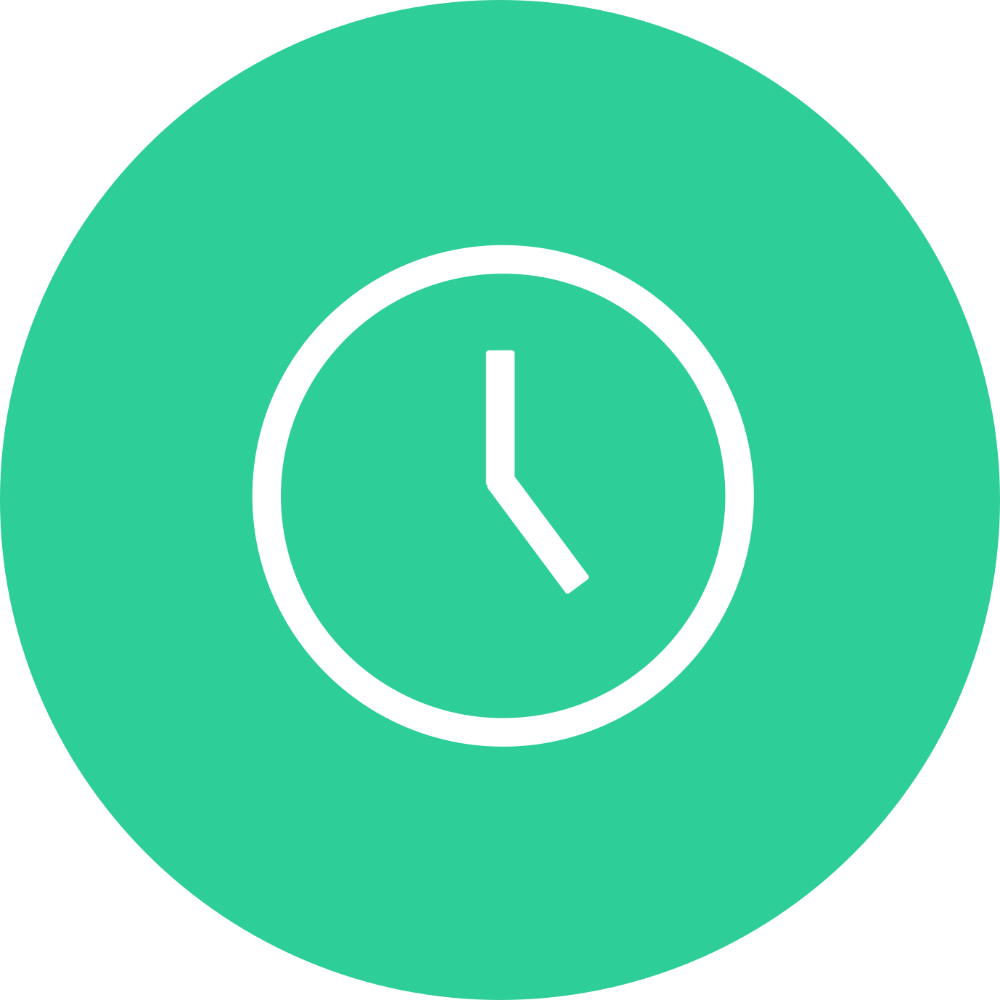
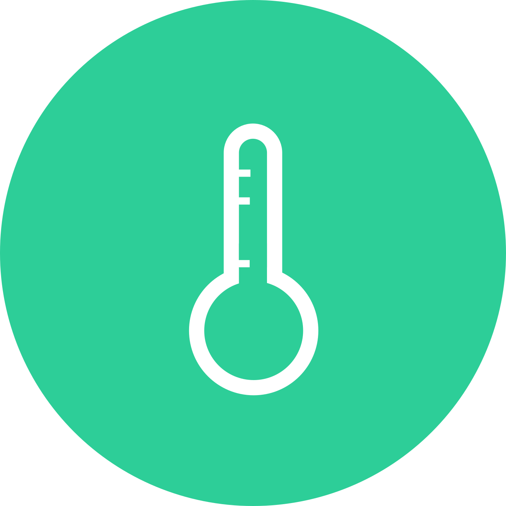

Dashboard - Algemeen
SEC. TOT LANCERING
TEMP. OP MARS
-60°C
AFST. TOT MARS
55,8 mjn km
SEC. TOT LANCERING

TEMP. OP MARS

-60°C
AFST. TOT MARS
55,8 mjn km
Voertuig informatie
Hoeveelheid brandstof (L)
Hoeveelheid brandstof (L)
Voertuig omgeving
Zwaartekracht per planeet
Zwaartekracht per planeet

Voorraden
Voedsel- en watervoorraad
Voedsel- en watervoorraad
De watervoorraad wordt automatisch aangevuld door het zuiveren van urine.